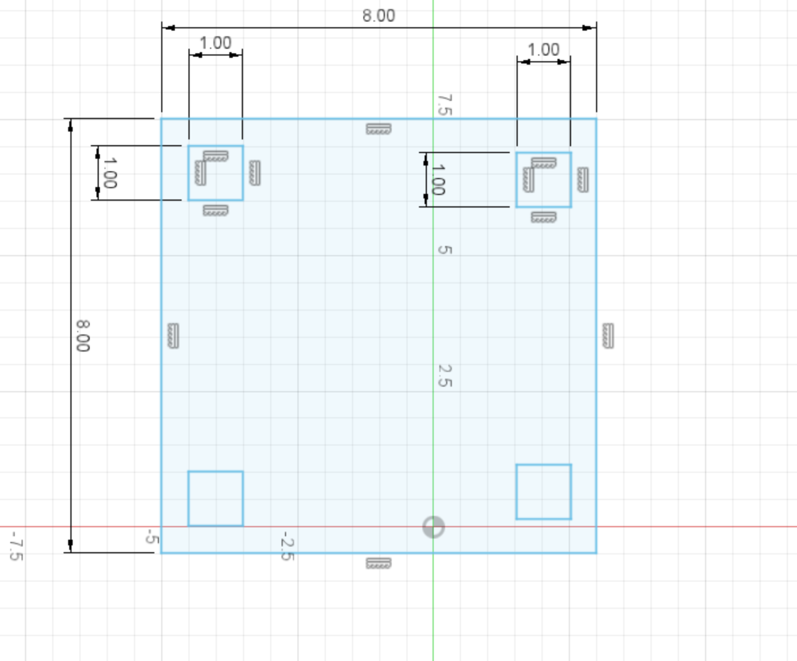

Week 6
3d Scanning and printing
3D printing is a digital fabrication that builds up models by additive process, layer by layer. It is a wonderful technology that turns our ideas into 3D printed reality. 3D priting is something I have plenty experiEnece with and ennjoy regularly.
Group Assignment:
- Test the design rules for your printer(s).
Individual Assignment:
- Design and 3D print an object that cant be made subtractively.
- 3D scan an object
Group Project
All-In-One 3D Print Test
So we went on Thingiverse.com and found a test print that looked like it covered enough stuff, but was also not so huge as to take forever to print. In the end, we decided on a mini all-in-one 3D printer test.
All-In-One 3D Print Test is a great test for any 3d printer. It comes with a whole variety of tests such as support test, stringing test, overhang test, bridging test, layer adhesion test, circle test and cylinder test. It tests every aspect of the printer and places where possible errors might occur. Addditionally, it is just one print that needs to be made.

The next step now that we had an STL was that we needed to pass it to the Prusa slice, export it as a gcode and send that to the printer.


After we had the gcode we could finally print and this was the result.


Once the object was printed we measured, with the help of some calipers, how our printer did. For the most part, precision of the printer was good. At its worst, it was off by a mm or 2. Given that we had pretty low settings to print it as quickly as possible, these mistakes were expected. We were actually surprised how well it did the bridging test, although I think it was pushed to its limit there. The only other thing that was interesting to us was to see how the print was beginning to fail when it turned past being 70 degrees on the turning horizontal test.

Personal Project
Elevated Cup Holder:
For the personal assignment I made an elevated cup holder. The aim of this project was to make something with an additive method as comapred to a subrtactive method. 3D printing is an additive manufacturing process which means that a material is built up to create a form, instead of being carved away. In order to print something, you need a 3D model, which is where CAD, computer-aided design, comes in again.
In terms of design, 3D printers are very good at creating many complex forms cheaply and relatively fast. This makes it a popular method of rapid prototyping. Printers are able to make complicated forms with interior spaces, because it builds the object from the bottom up. Also, printers are less wasteful since you aren't discarding lots of subtracted material.
I 3d printed this elevated cup holder in all white to match the aesthetic of my desk. I started by making a ball and giving it some thickness.
Then I procceeded to make the bottom stand. In hindsight, i should have designed the base plate a bit bigger to prevent it from wrapping as it did int he final print.
This is what the fully designed piece looked like:

After printing, this is what it finally looked it:

3D Scanning
Metashape
I couldnt use an actual laser 3D scanner which takes photos of the object and then using the laser it detects the depth of the object. This allows for incredibly accurate mesh verticies. Instead of this I used a software called MetaShape.
Agisoft's Metashape is a stand-alone software product that performs photogrammetric processing of digital images and generates 3D spatial data to be used in a variety of production. The reason I used Metashape is cause it has a very easy process- take a video of the object from 360 degrees; upload it; wait for a WHILE and then boom.
I wish the whole thing went as smoothly as it was supposed to.
First i took a video of a bottle of coke that i had lying around. Then, i opened Metashape and right clicked on the "Chunk 1.

Metashape cannot directly convert the video into a mesh verticies so we need to convert the video into frames. Luckily, Metashape has a function built in to do this. After you right click the chunk1 you go to "import" and then click "import video..."

Then you have to align the images. Again this is something that is built under "process"

After this, you need to kick back and elax as the next step takes over 2 hours.

We ended up with something like this

So once this process is done you need to build the mesh. This process shoudlve takenn another 2 hours max, innstead after 6 hours i am still waiting

After 7 hours i finally got a half decent scan. Here is what i got:

And this is the video that i took: